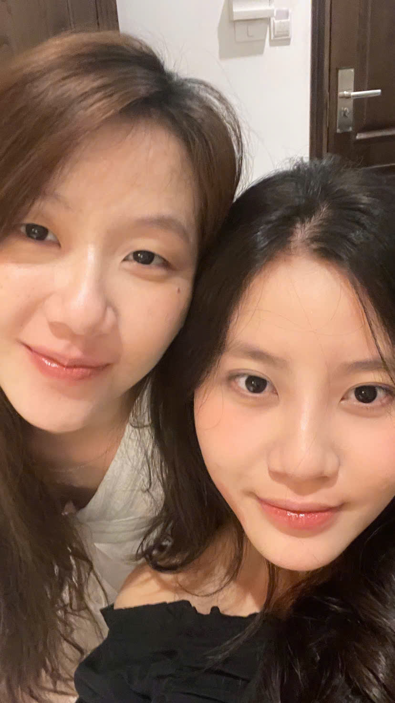
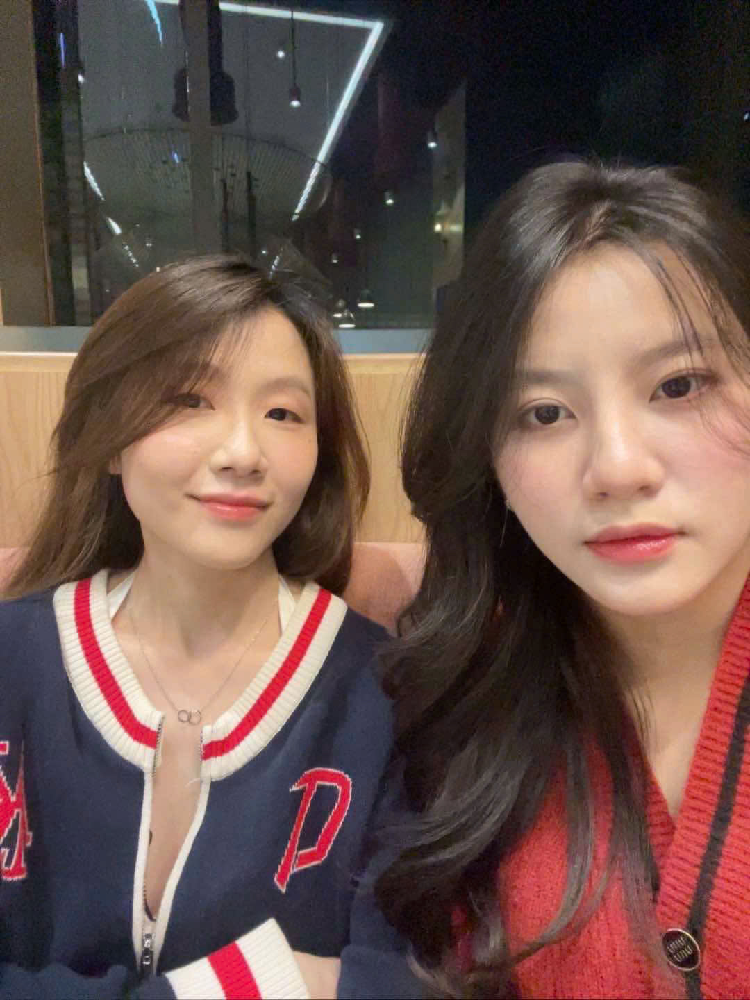

Happy valentine!
25/09/2024
có lẽ chẳng ai ngờ được khoảnh khắc đầu tiên gặp nhau lại có thể trở thành một điều đáng nhớ đến vậy. ánh mắt chạm nhau lần đầu, tim khẽ rung lên một nhịp lạ, như thể mọi thứ xung quanh đều trở nên chậm lại. từng câu nói, từng nụ cười, tất cả đều lưu lại trong tâm trí, như một đoạn phim đẹp chẳng muốn tua nhanh. 💙
01/12/2024
sinh nhật bé, nhưng sao mình lại thấy háo hức như thể ngày của mình vậy nhỉ? có lẽ vì đây là ngày bé ra đời, để rồi sau này chúng mình gặp nhau, yêu nhau. thế nên, với mình, ngày này không chỉ đặc biệt với bé mà còn ý nghĩa vô cùng với mình nữa. chúc bé thêm một tuổi mới thật nhiều niềm vui, thật nhiều hạnh phúc.
08/01/2025
hà nội có gì đâu, chỉ có bé là lý do duy nhất khiến mình muốn đến. đường phố có đông thế nào cũng không quan trọng, trời có lạnh bao nhiêu cũng chẳng sao, vì chỉ cần có bé bên cạnh, mọi thứ đều trở nên ấm áp. nhớ bé nhiều lắm.
Happy valentine!

28/09/2024